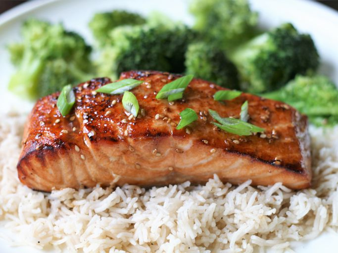

Teriyaki Salmon

Description
This recipe never fails to be a hit, whether we broil the salmon in the oven or grill it outdoors.
Pair it with some homemade teriyaki fried rice to complete your meal.
Ingredients
- Sesame Oil
- Lemon Juice
- Soy Sauce
- Brown Sugar
- Sesame Seeds
- Spices
- Salmon
Steps
- Make the marinade on the stove, then set aside ¼ cup for basting.
- Marinate the salmon in zip-top bags in the refrigerator for up to two hours.
- Broil the salmon until it flakes easily, brushing with the reserved marinade as-needed.
Home